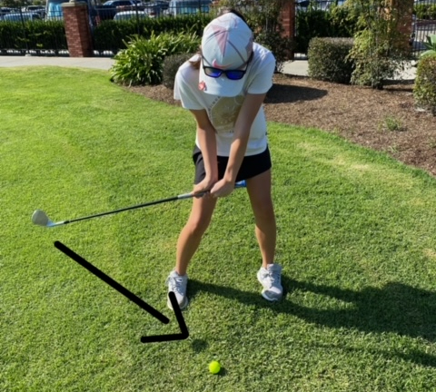

Sand Wedge Shots
Although hitting with a sand wedge and a 7 iron may not seem that different, they are actually very different.
- Place your ball a a couple of inches back
- Angle your club face down
- Hit the ball from above with you club angled down as possible. It should feel like you are hitting the ball like the image.
- The ball should go left so hit it to the right (for right-handed players)
- You need to practice a lot to get the hang of it and to get the right distance.